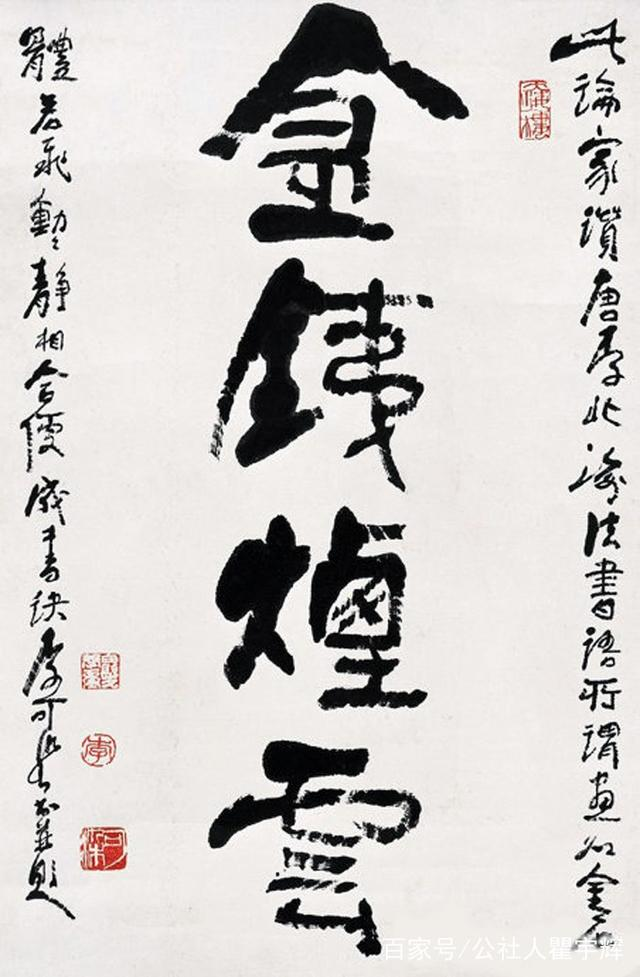

作品展厅
杜甫
林散之（1898年11月20日—1989年12月6日），名霖，又名以霖，字散之，号三痴、左耳、江上老人等，生于江苏南京市江浦县（今南京市浦口区），祖籍安徽省和县乌江镇七颗松村庄，诗人、书画家，尤擅草书。

李可染（1907年3月26日—1989年12月5日），原名李永顺，江苏徐州人，中国近代杰出的画家、诗人，画家齐白石的弟子。 李可染自幼即喜绘画，13岁时学画山水。43岁任中央美术学院教授，49岁为变革山水画，行程数万里旅行写生。72岁任中国美术家协会副主席、中国画研究院院长。晚年用笔趋于老辣。擅长画山水、人物，尤其擅长画牛。 [1] 代表画作有《漓江胜景图》《万山红遍》《井冈山》等。代表画集有《李可染水墨写生画集》《李可染中国画集》《李可染画牛》等。